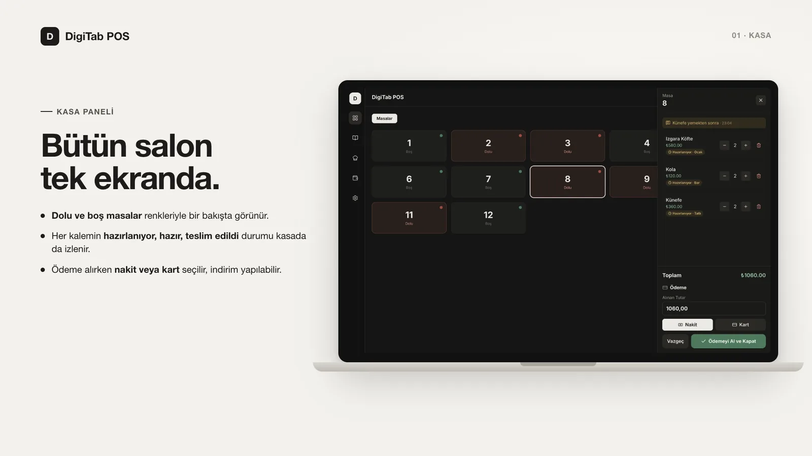
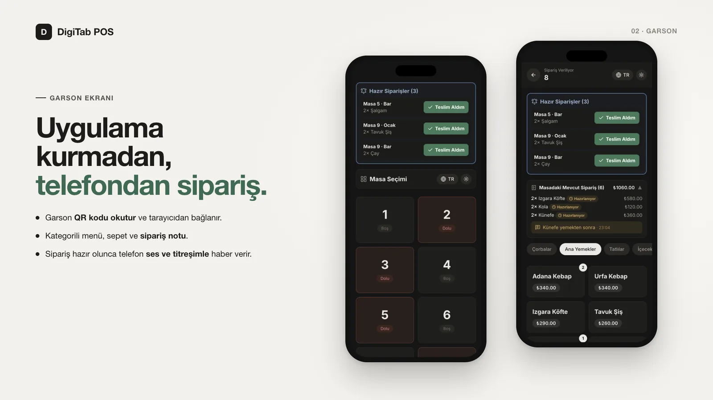
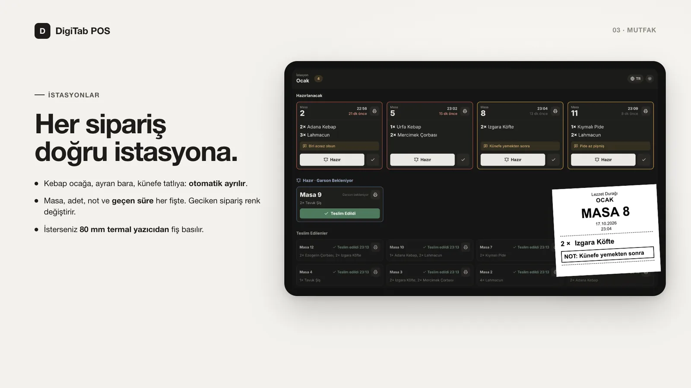
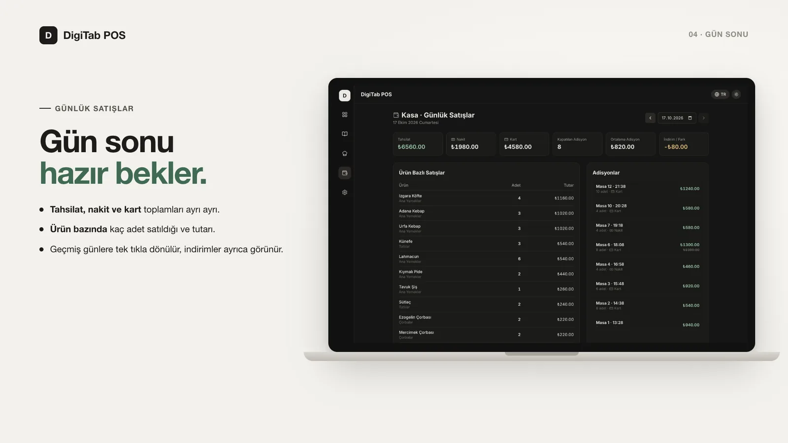
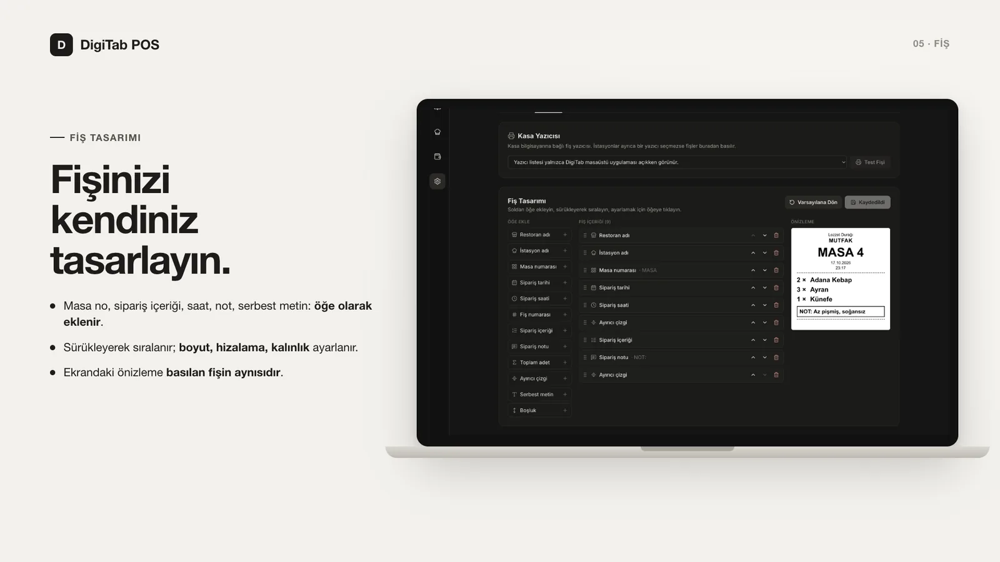

Proje 08 · 2024
DigiTab Adisyon Sistemi
Restoran ve kafeler için kasa bilgisayarında çalışan adisyon sistemi: telefondan sipariş, mutfak istasyonları, fiş yazdırma ve gün sonu raporu.
08.1Özet
Kâğıt adisyonla çalışan bir işletmede sipariş garsondan mutfağa, oradan kasaya elden ele taşınıyor; bu da gecikme ve hata demek. DigiTab bu akışı dijitalleştiriyor: garson siparişi telefondan alıyor, her kalem kendi mutfak istasyonuna düşüyor, hazır olunca garsonun telefonu titriyor, kasa her şeyi anında görüyor ve gün sonu raporu hazır bekliyor.
Uygulama kasa bilgisayarına kurulan tek bir masaüstü programı. İnternet bağlantısı, abonelik ya da garson telefonlarına uygulama kurulumu gerektirmiyor: telefonlar ve mutfak tabletleri aynı Wi-Fi ağı üzerinden tarayıcıyla bağlanıyor, bütün veriler kasa bilgisayarındaki tek bir SQLite dosyasında tutuluyor.
08.2Mimari
Kasa bilgisayarındaki Electron uygulaması aynı zamanda sunucu: Next.js sayfaları ve Socket.io olayları tek bir Node.js sürecinden sunuluyor. Veriyi değiştiren her işlem sunucudaki socket olaylarından geçiyor ve bütün ekranlara anında yayınlanıyor.
08.3Özellikler
| Kasa paneli | Masaların doluluk durumu, adisyon, notlar ve her kalemin hazırlık durumu |
|---|---|
| Garson ekranı | QR kodla tarayıcıdan bağlanma, kategorili menü, sepet ve sipariş notu |
| İstasyonlar | Kalemler kategori veya ürün bazında ocak, bar, tatlı gibi istasyonlara otomatik ayrılıyor |
| Mutfak ekranı | Masa, adet, not ve geçen süre; geciken fiş sarı / kırmızı çerçeveyle öne çıkıyor |
| Hazır bildirimi | İstasyon “Hazır” deyince garson telefonu ses ve titreşimle uyarıyor |
| Ödeme | Alınan tutar (indirimli) ve ödeme türü (nakit / kart); adisyon satış defterine yazılıyor |
| Günlük satışlar | Tahsilat, nakit / kart dağılımı, ürün bazlı adet ve tutar, geçmiş günler |
| Fiş yazdırma | 80 mm termal yazıcı; kasaya bağlıysa yazdırma penceresi açılmadan |
| Fiş tasarımcısı | Masa no, sipariş içeriği, saat, not gibi öğeler sürükle-bırakla dizilip boyut ve hizalaması ayarlanıyor |
| Diğer | Menü yönetimi, tek tıkla yedekleme, açık / koyu tema, TR / EN arayüz |
08.4Ekranlar










08.5Tasarım notları
- Yerel öncelikli: sistem internete hiç ihtiyaç duymuyor. Bağlantı kesilse de servis sürüyor ve veriler işletmenin bilgisayarından çıkmıyor.
- Güven sınırı: yönetim ekranları ve işlemleri yalnızca kasa bilgisayarından (
localhost) kabul ediliyor. Fiyatlar istemciden alınmıyor, her zaman menüden okunuyor; bütün socket olayları sunucuda doğrulanıyor. - Satış defteri: masa kapatılırken ürün adı, fiyat ve masa numarası o anki haliyle ayrı tablolara kopyalanıyor. Menü değişse ya da masa sayısı düşse de geçmiş raporlar bozulmuyor.
- Fiş HTML olarak basılıyor: fiş, ESC/POS ham komutları yerine 80 mm genişlikte bir sayfa olarak çiziliyor ve işletim sisteminin yazıcı sürücüsüyle basılıyor. Böylece Türkçe karakterlerde kod sayfası sorunu yaşanmıyor ve sürücüsü olan her fiş yazıcısı çalışıyor. Ayarlardaki önizleme ile basılan fiş aynı bileşenden üretiliyor.
- Yazdırma ajanı: Electron ana süreci sunucuya socket istemcisi olarak bağlanıp yazıcı listesini bildiriyor ve fişleri gizli bir pencerede açıp diyalogsuz basıyor. Bu yaklaşım hem geliştirmede (ayrı süreçler) hem kurulum sürümünde (tek süreç) aynı şekilde çalışıyor.
08.6Durum
- Garson, kasa ve istasyon ekranları, hazır bildirimi
- Ödeme alma ve günlük satış raporu
- Fiş yazdırma ve fiş tasarımcısı
- Windows ve macOS kurulum dosyaları (v1.1.0), GitHub Actions ile derleme ve paket testi
- Yazar kasa (ÖKC) ve e-fatura entegrasyonu
- Kullanıcı girişi ve yetki seviyeleri
- Çoklu şube ve uzaktan raporlama